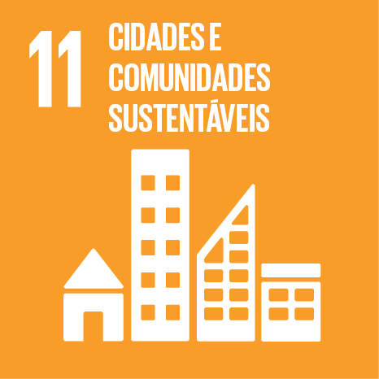

<!DOCTYPE html>
<html lang="pt"></html>
<head>
    <meta charset="UTF-8">
    <meta name="viewport" content="width=device-width, initial-scale=1.0">
    <title>ODS 11 - Cidades e Comunidades Sustentáveis</title>
    <link href="https://fonts.googleapis.com/css2?family=Montserrat:wght@400;700&display=swap" rel="stylesheet">
    <style>
        :root {
            --ods-yellow: #f9a825;
            --ods-yellow-light: #fffde7;
            --ods-yellow-dark: #ffb300;
            --text-dark: #333;
            --bg-main: #f7f3e8;
            --white: #fff;
            --shadow: 0 4px 24px rgba(0,0,0,0.10);
        }
        * {
            box-sizing: border-box;
        }
        body {
            font-family: 'Montserrat', Arial, sans-serif;
            background: var(--bg-main);
            margin: 0;
            padding: 0;
            color: var(--text-dark);
        }
        header {
            background: linear-gradient(90deg, var(--ods-yellow) 60%, var(--ods-yellow-dark) 100%);
            color: var(--white);
            padding: 40px 0 30px 0;
            text-align: center;
            box-shadow: var(--shadow);
            position: relative;
        }
        .img-ods {
            display: block;
            margin: 0 auto 18px auto;
            max-width: 120px;
            filter: drop-shadow(0 2px 8px rgba(0,0,0,0.10));
            border-radius: 12px;
            background: var(--white);
            padding: 8px;
        }
        header h1 {
            font-size: 2.4rem;
            margin: 0 0 10px 0;
            font-weight: 700;
            letter-spacing: 1px;
        }
        header p {
            font-size: 1.15rem;
            margin: 0;
            font-weight: 400;
        }
        main {
            max-width: 950px;
            margin: 40px auto 30px auto;
            background: var(--white);
            padding: 40px 36px 36px 36px;
            border-radius: 18px;
            box-shadow: var(--shadow);
        }
        h2 {
            color: var(--ods-yellow);
            margin-top: 32px;
            font-size: 1.5rem;
            font-weight: 700;
            border-left: 5px solid var(--ods-yellow);
            padding-left: 12px;
            margin-bottom: 14px;
        }
        ul {
            margin-left: 24px;
            margin-bottom: 18px;
        }
        ul li {
            margin-bottom: 8px;
            line-height: 1.6;
        }
        .indicadores {
            background: var(--ods-yellow-light);
            padding: 22px 22px 10px 22px;
            border-radius: 10px;
            margin-bottom: 24px;
            border-left: 5px solid var(--ods-yellow);
            box-shadow: 0 2px 8px rgba(249,168,37,0.07);
        }
        .indicadores ul {
            margin-left: 0;
        }
        a {
            color: var(--ods-yellow);
            text-decoration: none;
            font-weight: 600;
            transition: color 0.2s;
        }
        a:hover {
            color: var(--ods-yellow-dark);
            text-decoration: underline;
        }
        footer {
            text-align: center;
            padding: 22px 0;
            background: linear-gradient(90deg, var(--ods-yellow) 60%, var(--ods-yellow-dark) 100%);
            color: var(--white);
            margin-top: 0;
            font-size: 1.05rem;
            letter-spacing: 1px;
            border-radius: 0 0 12px 12px;
            box-shadow: 0 -2px 12px rgba(0,0,0,0.04);
        }
        /* Decorative divider */
        .divider {
            width: 80px;
            height: 5px;
            background: linear-gradient(90deg, var(--ods-yellow) 60%, var(--ods-yellow-dark) 100%);
            border-radius: 3px;
            margin: 30px auto 30px auto;
        }
        /* Responsive */
        @media (max-width: 700px) {
            main {
                padding: 18px 8px 18px 8px;
            }
            header {
                padding: 28px 0 18px 0;
            }
            .img-ods {
                max-width: 80px;
            }
            h2 {
                font-size: 1.15rem;
                padding-left: 8px;
            }
        }
    </style>
</head>
<body>
    <header>
        
        <h1>ODS 11 - Cidades e Comunidades Sustentáveis</h1>
        <p>Tornar as cidades e os assentamentos humanos inclusivos, seguros, resilientes e sustentáveis</p>
    </header>
    <div class="divider"></div>
    <main>
        <h2>O que é a ODS 11?</h2>
        <p>
            A ODS 11 faz parte dos Objetivos de Desenvolvimento Sustentável da ONU e busca garantir que cidades e comunidades sejam lugares melhores para viver, promovendo inclusão, segurança, resiliência e sustentabilidade.
        </p>
        <h2>Principais Metas</h2>
        <ul>
            <li>Garantir acesso à habitação segura e acessível para todos.</li>
            <li>Melhorar o transporte público e torná-lo acessível.</li>
            <li>Reduzir o impacto ambiental das cidades, especialmente na qualidade do ar e gestão de resíduos.</li>
            <li>Proteger o patrimônio cultural e natural mundial.</li>
            <li>Reduzir o número de pessoas afetadas por desastres naturais.</li>
            <li>Oferecer espaços públicos seguros, inclusivos e acessíveis.</li>
        </ul>
        <h2>Indicadores</h2>
        <div class="indicadores">
            <ul>
                <li>Proporção da população urbana vivendo em favelas ou habitações inadequadas.</li>
                <li>Qualidade do transporte público.</li>
                <li>Quantidade de resíduos sólidos urbanos recolhidos e tratados.</li>
                <li>Áreas verdes urbanas acessíveis à população.</li>
            </ul>
        </div>

        <h2>Eficiência Energética e Transição para Energias Renováveis</h2>
        <p>
            Em 2022, as 230 unidades do SESI‑SP e SENAI‑SP implementaram um programa de eficiência energética que reduziu em 25% o consumo de energia elétrica. Entre as ações, destacam-se a instalação de micro usinas fotovoltaicas, substituição de cerca de 136 mil lâmpadas fluorescentes por LEDs (economia de quase 9 GWh/ano) e sistemas de gestão digitalizada de energia para monitoramento em tempo real.
        </p>
        <p>
            <strong>Conexão com ODS:</strong> ODS 11 (resiliência e sustentabilidade urbana), ODS 7 (energia limpa), ODS 9 (inovação) e ODS 12 (consumo responsável).
        </p>

        <h2>Economia Circular na Formação Técnica</h2>
        <p>
            Desde janeiro de 2024, o SENAI‑SP e a Gerdau firmaram parceria em 61 municípios paulistas. O aço fornecido para aulas práticas retorna como sucata para reciclagem, fechando o ciclo produtivo. Nos dois primeiros semestres, foram geradas cerca de 450 toneladas de sucata, envolvendo mais de 11 mil alunos.
        </p>
        <p>
            O projeto aprofunda o aprendizado sobre economia circular, reduzindo emissões e consumo de recursos, além de oferecer certificação digital de participação.
        </p>

        <h2>Projetos Sustentáveis Reconhecidos</h2>
        <p>
            Em julho de 2024, o SENAI‑SP recebeu o Prêmio Chico Mendes de Ecologia e Meio Ambiente por iniciativas como troca de lâmpadas por LED, coleta seletiva de resíduos, instalação de mini‑usinas fotovoltaicas, captação de água de chuva, o programa “Tampinha Legal” e ações de conscientização ambiental.
        </p>

        <h2>Educação, Eventos e Mobilização Sustentável</h2>
        <p>
            Em maio de 2025, o SENAI‑SP participou do World Circular Economy Forum (WCEF 2025) em São Paulo, promovendo sessões sobre formação de educadores e práticas pedagógicas sustentáveis. A Escola Móvel de Economia Circular percorreu 31 cidades, e cursos online gratuitos sobre o tema foram lançados em três idiomas.
        </p>

        <h2>Conexão com o ODS 11: Cidades e Comunidades Sustentáveis</h2>
        <table style="width:100%;border-collapse:collapse;margin-bottom:18px;">
            <thead>
                <tr style="background:#fffde7;">
                    <th style="border:1px solid #f9a825;padding:8px;">Meta do ODS 11</th>
                    <th style="border:1px solid #f9a825;padding:8px;">Contribuição do SENAI‑SP</th>
                </tr>
            </thead>
            <tbody>
                <tr>
                    <td style="border:1px solid #f9a825;padding:8px;">11.6 – Reduzir impacto ambiental</td>
                    <td style="border:1px solid #f9a825;padding:8px;">Eficiência energética, uso de energia solar e economia circular no ambiente educacional.</td>
                </tr>
                <tr>
                    <td style="border:1px solid #f9a825;padding:8px;">11.3 – Urbanização inclusiva e gestão participativa</td>
                    <td style="border:1px solid #f9a825;padding:8px;">Educação profissional promovendo inovação social e técnica.</td>
                </tr>
                <tr>
                    <td style="border:1px solid #f9a825;padding:8px;">11.a – Integração entre áreas urbanas e rurais</td>
                    <td style="border:1px solid #f9a825;padding:8px;">Educação e mobilização de mais de 61 cidades, com forte abrangência territorial.</td>
                </tr>
                <tr>
                    <td style="border:1px solid #f9a825;padding:8px;">11.b – Planos integrados para resiliência e adaptação</td>
                    <td style="border:1px solid #f9a825;padding:8px;">Eventos como WCEF, capacitação e educação projetual.</td>
                </tr>
                <tr>
                    <td style="border:1px solid #f9a825;padding:8px;">11.7 – Espaços públicos seguros e verdes</td>
                    <td style="border:1px solid #f9a825;padding:8px;">Fortalecimento da consciência sustentável e apoio a projetos que valorizam espaços e comunidades.</td>
                </tr>
            </tbody>
        </table>

        <h2>Como contribuir?</h2>
        <ul>
            <li>Utilize transporte público, bicicleta ou caminhe sempre que possível.</li>
            <li>Participe de iniciativas de reciclagem e descarte correto de resíduos.</li>
            <li>Valorize e preserve espaços públicos e áreas verdes.</li>
            <li>Engaje-se em projetos comunitários e ações locais.</li>
        </ul>
        <h2>Saiba mais</h2>
        <p>
            Para mais informações, acesse o site oficial da <a href="https://brasil.un.org/pt-br/sdgs/11" target="_blank">ONU Brasil - ODS 11</a>.
        </p>
    </main></tr>
    <footer>
        &copy; 2025 | ODS 11 - Cidades e Comunidades Sustentáveis
    </footer>
</body>
</html>
